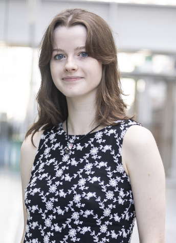
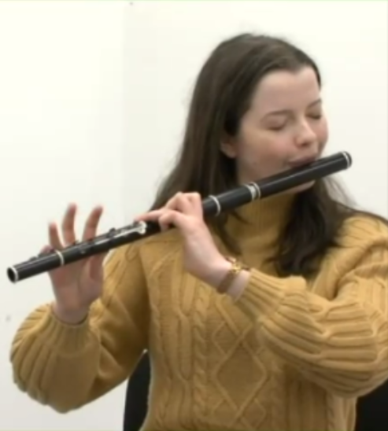
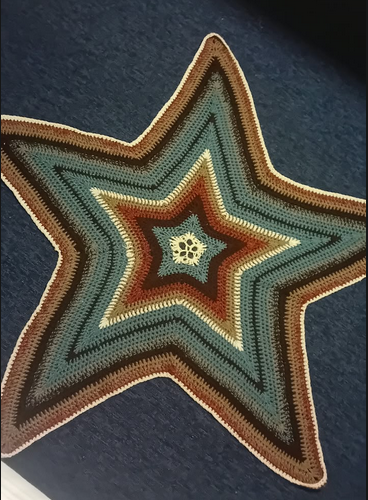

Final Year Theoretical Physics Student at Trinity College Dublin, Computational Condensed Matter Physics research, Flautist
Two-band tight-binding model of a honeycomb lattice with one pz orbital per atom, the kind of π-band picture you would fit to DFT with Wannier functions. Left: bands along Γ–M–K–Γ. Right: density of states. Energies are measured from the Fermi level at half filling; green states are occupied and blue are empty. A sublattice potential m breaks inversion symmetry and opens a gap, as in hBN, and t′ tilts the bands and shifts the Dirac point.

My research interests fall into the area of computational condensed matter physics. My first research project was in the summer of 2025 at Trinity, supervised by Dr David O'Regan. I wrote tight-binding code in Python to calculate band structures, densities of states and optical properties of 3D crystals, and used Fermi's golden rule to connect the electronic structure to the dielectric function. And so began my passion for this area of physics. This summer I was a Summer Fellow at the Tyndall National Institute. I investigated the impact of Germanium concentration in SiGe on the electronic and optical properties of G-centre defects in Silicon.
I like explaining things almost as much as working them out. I'm a teaching assistant in the School of Mathematics, running weekly tutorials in linear algebra and calculus, and I spent two years as a Student2Student mentor for first-year Theoretical Physics students. I have worked as the Public Relations Officer for the Theoretical Physics Students Association for 3 years now, and last year, my team placed second at our hackathon with an analysis of Dublin traffic data. Before university, I was a member of the Irish Mathematical Olympiad squad.
Away from physics, I play and teach traditional Irish music: flute and tin whistle, to students from age five to adults. I was Leinster Fleadh champion in flute slow airs and played in a Leinster-winning under-18 céilí band. I'm a fluent Irish speaker, I studied Irish Sign Language at Trinity, and I swam and ran competitively growing up.
My current research interests are:
This project is my final-year thesis.
Somethign.
Something.
Over 14 years ago, I started learning the classical flute. All this while later and my instrument has played such a huge role in my life thus far - providing friendships, solace and ultimately, a source of income. I now teach traditional irish flute and tin whistle both privately and for a comhaltas branch and perform at events with Erin, a harpist and my best friend.

Over a year ago, I set out to start making my own clothes as a creative outlet and once I started crocheting and got used to the feeling of self-sufficiency in that regard, I never really stopped. Since then, I have crocheted bags, cardigans, bath mats, coasters, mittens - I have tried to crochet most things to be honest. Its a relaxing hobby that I am very passionate about. Recommendations about what I should crochet next are very welcome!!!
